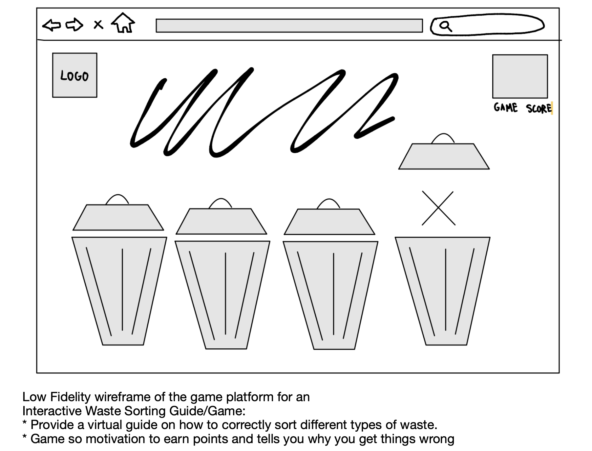

Game Help Content
How to Play the Game
To play the waste management game, users interact with a series of pages containing comprehensive learning resources and tools designed to help them understand and effectively manage waste. These pages provide examples and explanations of hazardous, recycling, garbage, and compost materials, along with visuals of corresponding bins for easy identification. Once users are familiar with the waste categories and sorting methods, they can proceed to the game.
In the game interface, users encounter character trash bins with color schemes corresponding to the waste categories they've learned about. Examples of different types of waste items appear at the top of the screen. Users then engage in drag-and-drop interactions, selecting the appropriate bin to sort each item. If the user correctly places an item in the corresponding bin, a checkmark appears, indicating success. If the item is placed incorrectly, users receive feedback and are prompted to try again. Additionally, the game provides explanations for each item, helping users understand why certain items belong in specific bins. This interactive and educational gameplay encourages users to apply their knowledge of waste management principles while reinforcing their understanding through hands-on practice and feedback.
